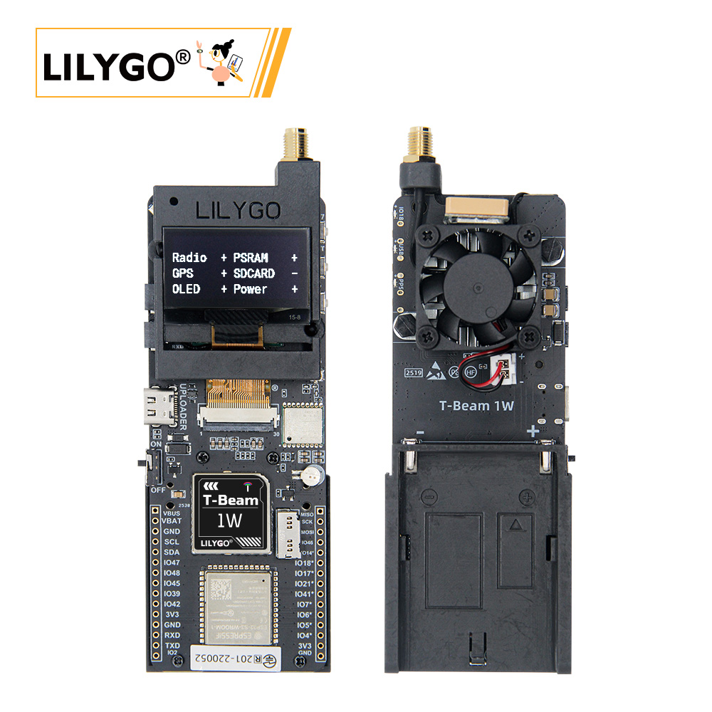
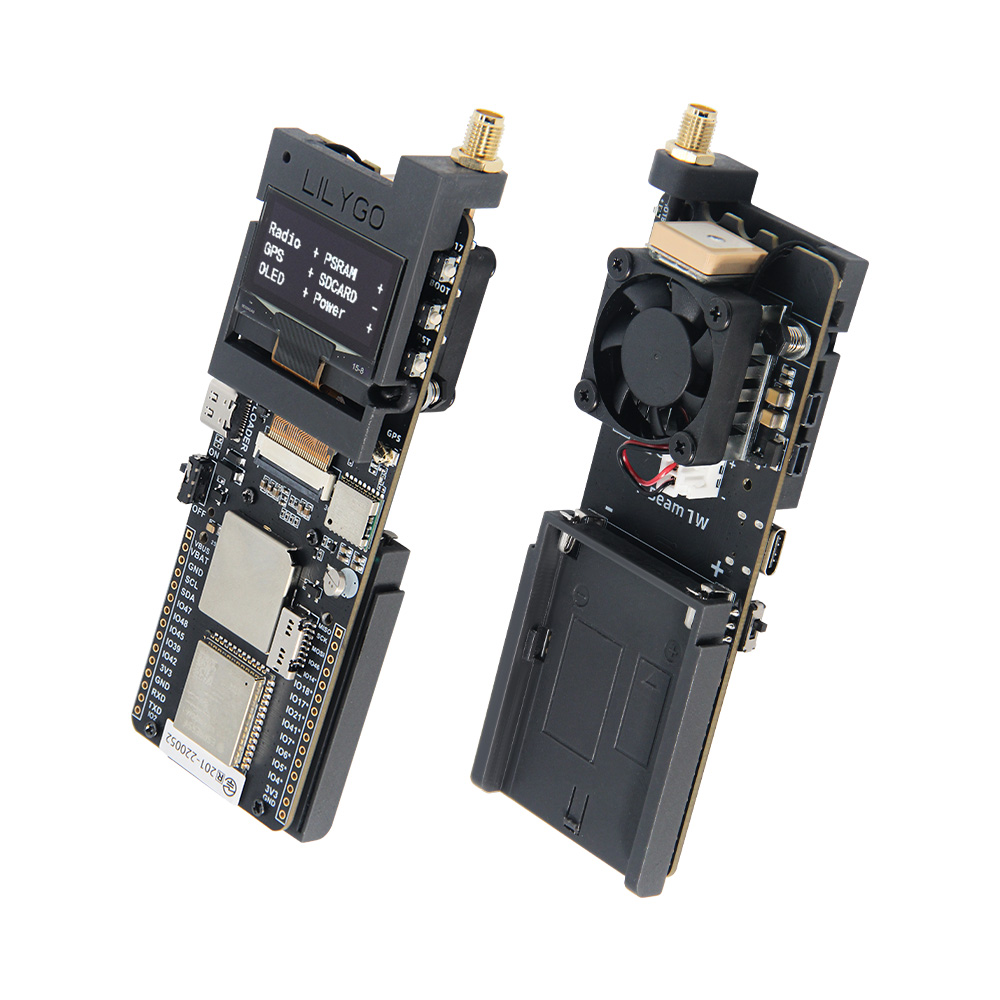
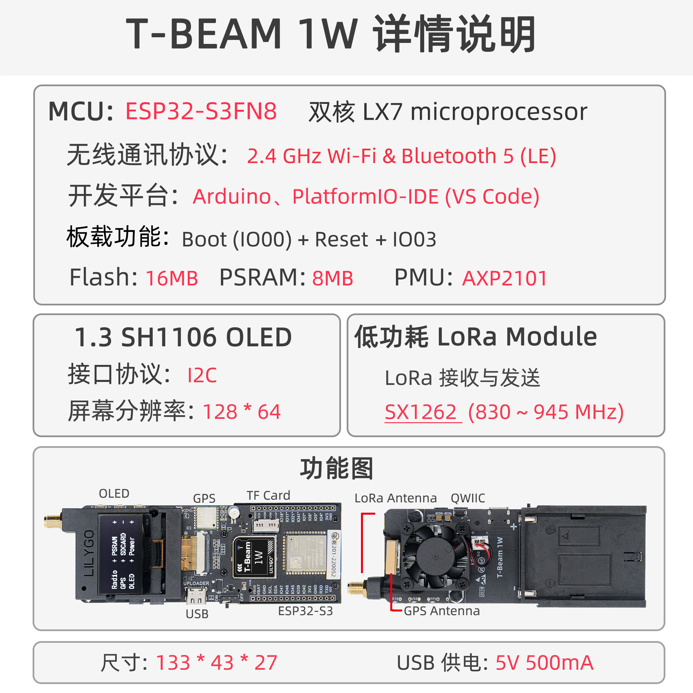
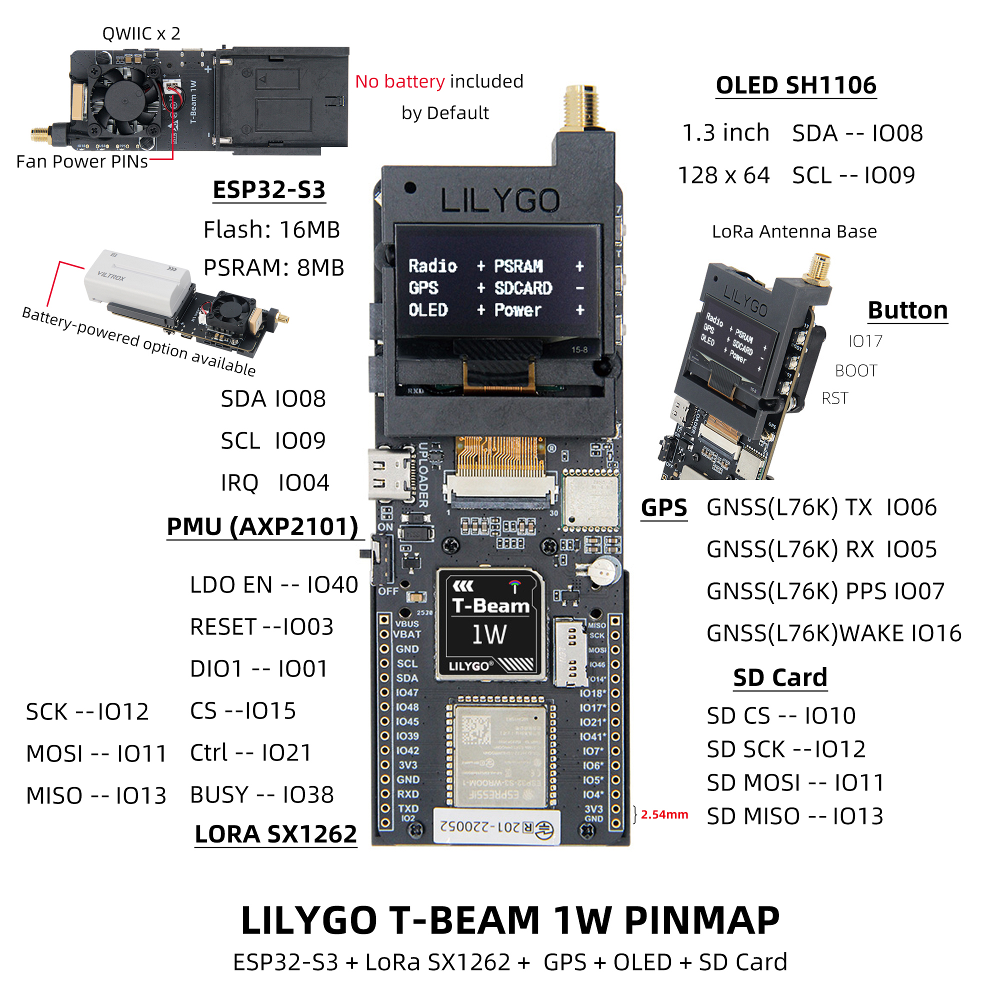
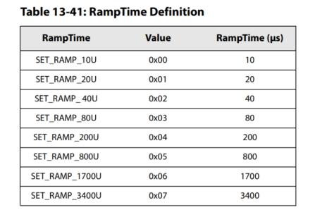
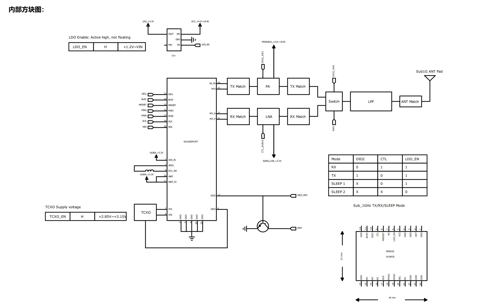
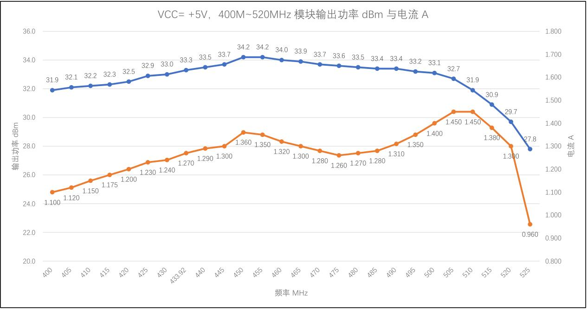
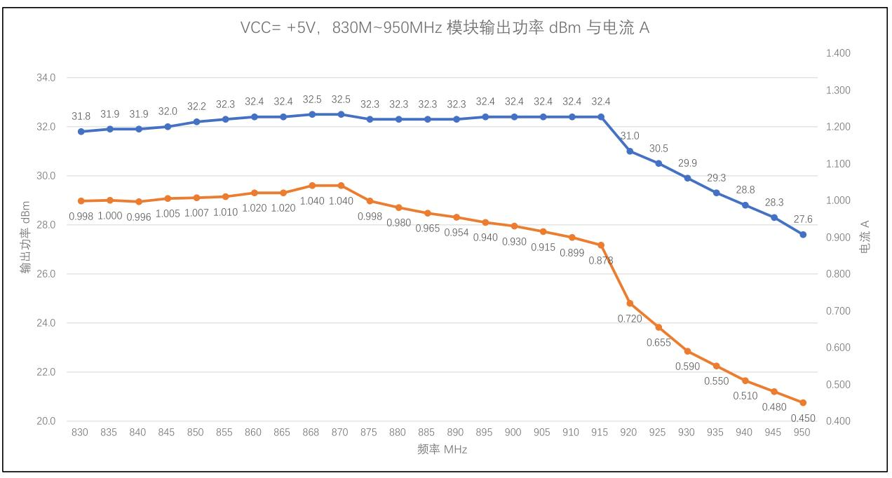

中文 简体
中文 简体LILYGO T-Beam 1W

版本迭代:
| Version | Update date | Update description |
|---|---|---|
| T-Beam-1W_V1.0 | 2024-06-15 | 初始版本 |
| T-Beam-1W_V1.1 | 2024-08-22 | 优化电源电路，增加风扇控制 |
购买链接
| Product | SOC | FLASH | PSRAM | PMU | Link |
|---|---|---|---|---|---|
| T-Beam-1W | ESP32-S3FN8 | 16MB | 8MB (OPI PSRAM) | AXP2101 | LILYGO Mall |
目录
概述
T-Beam-1W 是一款集成了 ESP32-S3 双核处理器、LoRa SX1262 模块、GPS L76K 定位模块、SH1106 OLED 屏幕和 AXP2101 电源管理芯片的高性能物联网开发板。板载 TF 卡槽、QWIIC 接口、外部天线接口，支持 Wi-Fi、蓝牙 5.0 和 LoRa 通信，适用于远距离通信、定位追踪、环境监测等应用场景。
使用须知：
- 本板不对外接 7.4V 电池充电，仅由电池供电。
- 发射前务必连接天线，否则易损坏 RF 模块。
- 引脚表中标有 * 的 GPIO 已连接内部模块，无法复用。
- 本板上 RF 模块最大输出功率为 32dBm。
实物图

规格参数

| 组件 | 规格 |
|---|---|
| MCU | ESP32-S3FN8，双核 LX7，240MHz |
| 无线 | Wi-Fi 2.4GHz + 蓝牙 5.0 LE |
| LoRa 模块 | SX1262，支持 830~945MHz |
| GPS 模块 | L76K，支持多星座定位 |
| 屏幕 | 1.3 英寸 SH1106 OLED，128×64 分辨率 |
| 存储 | 16MB Flash + 8MB PSRAM，支持 TF 卡扩展 |
| 电源管理 | AXP2101，支持 USB-C 供电，7.4V 电池输入 |
| 接口 | QWIIC、UART、SPI、I2C、TF 卡槽 |
| 按键 | BOOT、RESET、自定义按键 |
| 尺寸 | 133 × 43 × 27 mm |
| USB 供电 | 5V / 500mA |
快速开始
PlatformIO 环境搭建
- 安装 Visual Studio Code 和 Python
- 在
Visual Studio Code的扩展中搜索PlatformIO插件并安装 - 安装完成后，需要重启
Visual Studio Code - 重启后，在左上角选择
文件->打开文件夹-> 选择LilyGo-LoRa-Series目录 - 等待第三方依赖库安装完成
- 点击打开
platformio.ini文件，在platformio栏目中 - 在
default_envs下选择您要使用的开发板名称，并取消其注释 - 取消其中一行
src_dir = xxxx的注释，确保只有一行生效。请注意示例注释，其中说明了哪些功能可用、哪些不可用。 - 点击左下角的 (✔) 符号进行编译
- 使用 USB-C 数据线将开发板连接至电脑（Micro-USB 接口用于模块固件升级）
- 点击 (→) 上传固件
- 点击 (插头符号) 监视串行输出
- 若无法烧录或 USB 设备持续闪烁，请查看下方的常见问题解答
Arduino IDE 环境搭建
- 安装 Arduino IDE
- 安装 [Arduino ESP32] Arduino ESP32
- 将
lib目录中的所有文件夹复制到Sketchbook 位置目录。如何找到您自己的库的位置，请参阅此处：https://support.arduino.cc/hc/en-us/articles/4415103213714-Find-sketches-libraries-board-cores-and-other-files-on-your-computer
- Windows：
C:\Users\{用户名}\Documents\Arduino - macOS：
/Users/{用户名}/Documents/Arduino - Linux：
/home/{用户名}/Arduino
- 打开相应的示例
- 打开下载的
LilyGo-LoRa-Series - 打开
examples - 选择示例文件并打开以
ino结尾的文件
- 在 Arduino IDE 工具项目中选择对应的开发板，并点击下方列表中的相应选项进行选择。
| Name | Value |
|---|---|
| Board | ESP32S3 Dev Module |
| Port | Your port |
| USB CDC On Boot | Enable |
| CPU Frequency | 240MHZ(WiFi) |
| Core Debug Level | None |
| USB DFU On Boot | Disable |
| Erase All Flash Before Sketch Upload | Disable |
| Flash Mode | QIO 80Mhz |
| Flash Size | 16MB(128Mb) |
| Arduino Runs On | Core1 |
| USB Firmware MSC On Boot | Disable |
| Partition Scheme | 16M Flash (3MB APP/9.9MB FATFS) |
| PSRAM | OPI PSRAM |
| Upload Speed | 921600 |
| Programmer | Esptool |
- 请根据您的板型号（例如
T_BEAM_1W）取消每个草图的utilities.h文件的注释，否则编译时会报错 - 上传示例
引脚映射

| 引脚名称 | GPIO | 是否可用 |
|---|---|---|
| Uart1 TX | 43 | ✅ |
| Uart1 RX | 44 | ✅ |
| I2C SDA | 8 | ❌ |
| I2C SCL | 9 | ❌ |
| SPI MOSI | 11 | ❌ |
| SPI MISO | 12 | ❌ |
| SPI SCK | 13 | ❌ |
| SD CS | 10 | ❌ |
| GPS TX | 6 | ❌ |
| GPS RX | 5 | ❌ |
| GPS PPS | 7 | ❌ |
| GPS Wake-up | 16 | ❌ |
| LoRa RESET | 3 | ❌ |
| LoRa DIO1 | 1 | ❌ |
| LoRa CS | 15 | ❌ |
| LoRa LDO EN | 40 | ❌ |
| LoRa Ctrl | 21 | ❌ |
| LoRa BUSY | 38 | ❌ |
| BOOT 按键 | 0 | ❌ |
| 自定义按键 | 17 | ❌ |
| 板载 LED | 18 | ❌ |
| NTC ADC | 14 | ❌ |
| 电池 ADC | 4 | ❌ |
| 风扇控制 | 41 | ❌ |
注意：
- LDO EN 为模块内部使能引脚，高电平打开 Radio。
- LoRa Ctrl 为内部 LNA 控制引脚，接收时高电平，发送/休眠时低电平。
电气参数
| 项目 | 说明 |
|---|---|
| USB-C 输入电压 | 3.9V ~ 6V |
| 充电功能 | 不支持 |
| 电池电压 | 7.4V |
提示： 建议电池放电能力 ≥ 2A，否则高功率发射时可能触发保护。
按钮与LED说明
| 按钮 | 功能 |
|---|---|
| IO17 | 自定义按键 |
| BOOT | 下载模式/自定义 |
| RST | 复位 |
| PWR（电源键） | 长按 6 秒关机 |
| LED | 说明 |
|---|---|
| IO18 LED | 受 GPIO18 控制 |
| PPS LED | 随 GPS 脉冲闪烁 |
| USB LED | USB 连接时亮起 |
相关测试
| 频段 | 模块型号 | 频率范围 | 输出功率 | 调制方式 |
|---|---|---|---|---|
| 868MHz | SX1262 (XY16P35) | 830~950MHz | 最大 32dBm | LoRa/FSK/GMSK |
| 433MHz | SX1262 (XY16P354) | 400~520MHz | 最大 32dBm | LoRa/FSK/GMSK |
重要提醒：
- 发射前务必连接天线。
- 建议 PA 稳定时间 > 800us。
- 发射前需提前切换 RF Switch 至 TX 通道，否则可能损坏 PA。

RF Block Diagram

VCC=+5V, 400M~520MHz module output power dBm and current

VCC=+5V, 830M~950MHz module output power dBm and current

常见问题
Q. 为什么烧录时 USB 设备不停闪烁？
A. 请检查是否选择了正确的开发板型号，并确保utilities.h中宏定义已打开。Q. 为什么 LoRa 发送距离很近？
A. 请确认天线已连接，且 RF Switch 切换正确，输出功率设置合理。Q. 电池供电时为何无法开机？
A. 请检查电池电压是否在 7.4V 左右，电池放电能力是否足够。Q. GPS 定位慢或无信号？
A. 请确保在室外空旷环境使用，并检查天线连接。RF Block Diagram